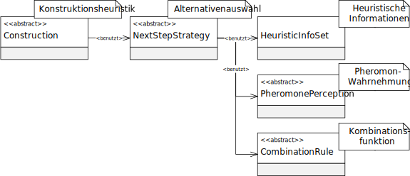

类 NextStepStrategyOnSubsetsDeterministic
java.lang.Object
eu.andredick.aco.nextstep.AbstractNextStepStrategy<PheromoneOnSubsets,SCPSolution>
eu.andredick.aco.nextstep.NextStepStrategyOnSubsetsDeterministic
public class NextStepStrategyOnSubsetsDeterministic
extends AbstractNextStepStrategy<PheromoneOnSubsets,SCPSolution>
确定性备选方案选择 - 候选方案选择的实现
侯选方案的确定性选择始终提供评价最高的备选方案。
此组件没有参数。
备选选择组件已替换为设计启发式
替代方案的选择基于为备选方案计算的启发式信息
替代方案的值通过组合功能
侯选方案的确定性选择始终提供评价最高的备选方案。
此组件没有参数。
备选选择组件已替换为设计启发式
AbstractConstruction
用于从给定的候选集中选择分量.替代方案的选择基于为备选方案计算的启发式信息
HeuristicInfoSet
或分配给备选方案所感知的信息素浓度 AbstractPheromonePerception。替代方案的值通过组合功能
CombinationRule由启发式信息和感知的信息素浓度形成。
-
字段概要
从类继承的字段 eu.andredick.aco.nextstep.AbstractNextStepStrategy
combinationRule, heuristics, perceptionRule, pheromoneStructure -
构造器概要
构造器构造器说明NextStepStrategyOnSubsetsDeterministic(PheromoneOnSubsets pheromonesStructure, AbstractPheromonePerception perceptionRule, HeuristicInfoSet heuristics, CombinationRule combinationRule) 构造函数 -
方法概要
修饰符和类型方法说明chooseSubset(SCPSolution solution, List<Integer> availableSubsets) 确定性地选择，选择具有最高值的替代方案。
-
构造器详细资料
-
NextStepStrategyOnSubsetsDeterministic
public NextStepStrategyOnSubsetsDeterministic(PheromoneOnSubsets pheromonesStructure, AbstractPheromonePerception perceptionRule, HeuristicInfoSet heuristics, CombinationRule combinationRule) 构造函数- 参数:
pheromonesStructure- 信息素关联perceptionRule- 信息素感知heuristics- 启发式信息combinationRule- 组合功能
-
-
方法详细资料
-
chooseSubset
- 指定者:
chooseSubset在类中AbstractNextStepStrategy<PheromoneOnSubsets,SCPSolution> - 参数:
solution- 蚂蚁的部分解availableSubsets- 可用的替代方案- 返回:
- 选择结果
-